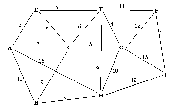

Határozza meg a Dijkstra algoritmus segítségével az F csúcsból az összes csúcsba a legolcsóbb utak költségeit! (A képen egy súlyozott gráf látható csúcsokkal A-tól J-ig). Csak a táblázat szürke részét kell kitölteni értelemszerűen!

(Eredeti feladat képe)
A Dijkstra táblázatban minden sor egy "fixált" csúcsot jelent. Mindig a legkisebb aktuális értékkel rendelkező csúcsot választjuk ki.
| Lépés | Választott | A | B | C | D | E | G | H | J | Magyarázat |
|---|---|---|---|---|---|---|---|---|---|---|
| 0. | - | ∞ | ∞ | ∞ | ∞ | ∞ | ∞ | ∞ | ∞ | Kezdetben minden végtelen, az F értéke 0. |
| 1. | F (0) | ∞ | ∞ | ∞ | ∞ | 11 | 12 | ∞ | 10 | F-ből elérhető: E(11), G(12), J(10). |
| 2. | J (10) | ∞ | ∞ | ∞ | ∞ | 11 | 12 | 22 | 10 | J-ből a H távolsága: 10+12=22. |
| 3. | E (11) | ∞ | ∞ | 17 | 18 | 11 | 12 | 20 | 10 | E-ből: C(11+6=17), D(11+7=18), H javul(11+9=20). |
| 4. | G (12) | ∞ | ∞ | 15 | 18 | 11 | 12 | 20 | 10 | G-ből: C javul(12+3=15). |
| 5. | C (15) | 22 | 24 | 15 | 18 | 11 | 12 | 20 | 10 | C-ből: A(15+7=22), B(15+9=24). D(15+5=20) nem javít a 18-on. |
| 6. | D (18) | 22 | 24 | 15 | 18 | 11 | 12 | 20 | 10 | D-ből az A(18+6=24) nem javít a 22-n. |
| 7. | H (20) | 22 | 24 | 15 | 18 | 11 | 12 | 20 | 10 | H-ból a B(20+9=29) nem javít a 24-en. |
| 8. | A (22) | 22 | 24 | 15 | 18 | 11 | 12 | 20 | 10 | A-ból a B(22+11=33) nem javít a 24-en. |
| 9. | B (24) | 22 | 24 | 15 | 18 | 11 | 12 | 20 | 10 | Minden csúcs kész. |
Ha a gráf vagy a súlyok változnak, a módszer ugyanaz marad: